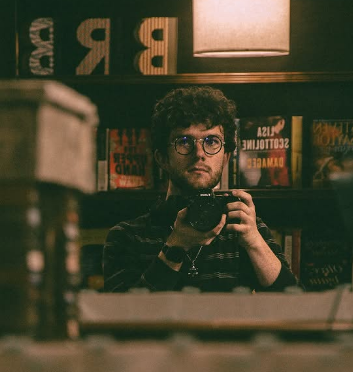
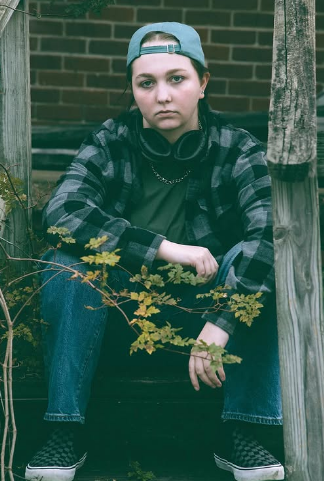

President and Founder
Cason Smith
Cason founded the club to create a place where photographers could share knowledge and build a stronger creative community at Tech.
About us
The club brings together students who want to practice, teach, experiment, and document life around campus and Ruston.
We work across different styles and mediums of photography. Some meetings are practical photoshoots, some are discussion-based, and some are built around sharing what members have made.
Members come from different majors and experience levels, which keeps critiques useful and shoots approachable.
We use photography to notice the campus, Ruston, and the people around us with more care. The gallery exists to keep that work visible.
Leadership

President and Founder
Cason founded the club to create a place where photographers could share knowledge and build a stronger creative community at Tech.

Public Relations Management
Sky supports outreach, networking, and event ideas, with local knowledge of Ruston and experience in photography and graphic design.

Information Technology Management
Abbie supports the club's technology, including tools that help members connect, join, and share work more easily.